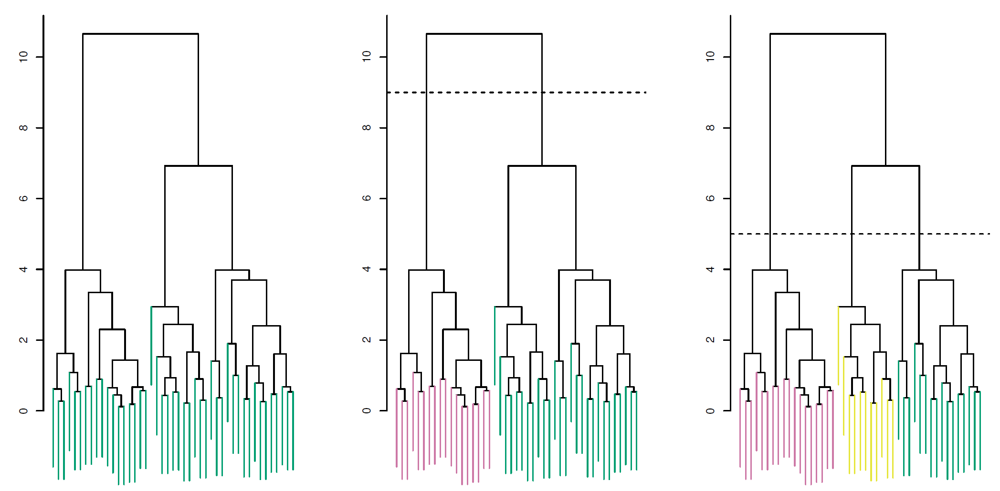
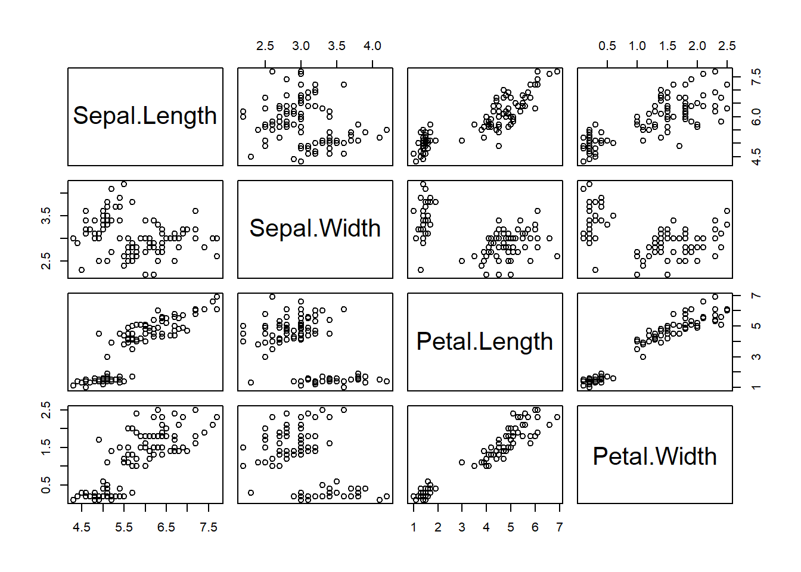

Chapter 18 Hierarchical Clustering
Reference: Ch12.4 in An introduction to Statistical Leraning with applications in R by James, Witten, Hastie and Tibshirani.
One potential disadvantage of \(k\)-means clustering: need to pre-sepcify the number of clusters \(k\).
Hierarchical clustering is a method to perform cluster analysis that seeks to build a hierarchy of clusters.
Two features:
Does not require us to pre-specify the number of clusters (but see the height of the cut below)
Results in an attractive tree-based representation of the observations, called dendrogram
Example of dendrogram:

Two types: bottom-up (agglomerative) and top-down (divisive)
We will describe bottom-up clustering (the most common type), where each observation starts in its own cluster, and pairs of clusters are merged as one moves up the hierarchy.
Interpreting a Dendrogram
The left figure shows the dendrogram (genearlly depicted as an upside-down tree) obtained from hierarchical clustering of \(45\) observations.
Each leaf of the dendrogram represents one of the \(45\) observations
As we move up the tree, some leaves begin to fuse into branches. These correspond to observations that are similar to each other.
As we move higher up the tree, the branches fuse, either with leaves or other branches.
The earlier fusions occur, the more similar the groups of observations are to each other.
For any two observations, we can look for the point in the tree where branches containing those two observations are first fused. The height of the fusion, as measured on the vertical axis, indicates how different the two observations are.
Note: The colors in the figure do not represent the true class labels. In fact, hierarchial clustering does not make use of class labels for the clustering.
Finding Clusters from a Dendrogram
To identify clusters from a dendrogram, make a horizontal cut across the dendrogram, as shown in the center and right-hand panels of the above figure
In the center panel of the above figure, cutting the dendrogram at a height of nine results in two clusters, as shown in distinct colors
In the right-hand panel, cutting the dendrogram at a height of five results in three clusters
The height of the cut plays the same role as the \(k\) in \(k\)-means clustering: it controls the number of clusters obtained
Now, we can understand the term hierarchical in this method. It refers to the fact that clusters obtained by cutting dendrogram at a given height are necessarily nested within the clusters obtained by cutting the dendrogram at any greater height. This also leads to one potential problem of hierarchical clustering:
The resulting hierarchical structure may be unrealistic for some datasets
18.1 Dissimilarity measure and Linkage
Just like \(k\)-means clustering, we have to define some sort of dissimilarity measure between each pair of observations. Usually, Euclidean distance is used.
In addition, how do we measure the dissimilarity between groups of observations? Linkage is a notion to define the dissimilarity between two groups of observations.
Given two groups of observations \(A\) and \(B\) and a dissimilarity measure \(d\) between two observations. Four commonly-used types of linkage:
- Complete: \(d_l(A, B) = \max_{x_i \in A, y_j \in B} d(x_i, y_j)\).
- Single: \(d_l(A, B) = \min_{x_i \in A, y_j \in B} d(x_i, y_j)\).
- Average: \(d_l(A, B) = \frac{1}{|A| \cdot |B|} \sum_{x_i \in A} \sum_{y_j \in B} d(x_i, y_j)\).
- Centroid: \(d_l(A, B) = d(A_c, B_c)\), where \(A_c = \frac{1}{|A|} \sum_{x_i \in A} x_i\) and \(B_c = \frac{1}{|B|} \sum_{y_j \in B} y_j\).
\(|A|\) denotes the cardinality of \(A\), the number of elements in \(A\).
18.2 Alogrithm
Begin with \(n\) observations and a measure of all the \(C^n_2\) pairwise dissimilarities. Treat each observation as its own cluster.
For \(i=n,n-1,\ldots,2\):
Examine all pairwise inter-cluster dissimilarities among the \(i\) clusters and identify the pair of clusters that are least dissimilar. Fuse these two clusters. The dissimilarity between these two clusters indicates the height in the dendrogram at which the fusion should be placed.
Compute the new pairwise inter-cluster dissimilarities among the \(i-1\) remaining clusters.
18.3 Applications
In R, use hclust() to implement hierarchical clustering.
We begin with some simulated data.
set.seed(2)
X <- matrix(rnorm(50 * 2), nrow = 50, ncol = 2)
X[1:25, ] <- X[1:25, ] + 3 # some mean shift for the first 25 observationsTo compute the distances between all the observations, use dist(). This will give you a \(50 \times 50\) matrix containing the distance between each pair of observations.
Perform hierarchical clustering with complete linkage:
Plot the dendrogram:

Use cutree() to determine the cluster labels for each observation associated with a given number of clusters:
cutree(hc_complete, k = 2) # given number of clusters = 2
## [1] 1 1 1 1 1 1 1 1 1 1 1 1 1 1 1 2 1 1 1 1 1 1 1 1 1 2 2 2 2 2 2 2 2 2 2 2 2
## [38] 2 2 2 2 2 2 2 2 2 2 2 2 2Use cutree() to determine the cluster labels for each observation associated with a given cut of the dendrogram:
cutree(hc_complete, h = 3) # cut at 3
## [1] 1 2 3 2 1 1 3 2 3 2 1 2 1 2 3 4 1 1 3 1 3 2 3 3 1 5 4 5 4 6 4 6 6 6 6 4 5
## [38] 5 5 5 4 5 6 6 6 6 4 5 6 5To perform hierarchical clustering with average linkage:
To perform hierarchical clustering with single linkage:
To scale the variables before performing hierarchical clustering:
18.3.1 NCI60 Data
Install and load the package ISLRT2. It contains NCI60 dataset.
NCI60: a cancer cell line microarray data, which consists of \(6,830\) gene expression measurements on \(64\) cancer cell lines.
Cancer types for the cell lines:
table(nci_labs)
## nci_labs
## BREAST CNS COLON K562A-repro K562B-repro LEUKEMIA
## 7 5 7 1 1 6
## MCF7A-repro MCF7D-repro MELANOMA NSCLC OVARIAN PROSTATE
## 1 1 8 9 6 2
## RENAL UNKNOWN
## 9 1Suppose we perform hierarchical clustering on this data with the goal of finding out whether or not the observation cluster into distinct types of cancer.
We first scale the data (this step may be optional):
Dendrogram:
hc_complete <- hclust(dist(nci_data_scale), method = "complete")
plot(hc_complete, labels = nci_labs, xlab = "", sub = "", ylab = "", cex = 0.6)
Clearly, cell lines within a single cancer type do tend to cluster together.
Now, let’s cut the dendrogram to obtain, say, \(4\) clusters and compare with the true cancer types:
hc_cluster <- cutree(hc_complete, k = 4)
table(hc_cluster, nci_labs)
## nci_labs
## hc_cluster BREAST CNS COLON K562A-repro K562B-repro LEUKEMIA MCF7A-repro
## 1 2 3 2 0 0 0 0
## 2 3 2 0 0 0 0 0
## 3 0 0 0 1 1 6 0
## 4 2 0 5 0 0 0 1
## nci_labs
## hc_cluster MCF7D-repro MELANOMA NSCLC OVARIAN PROSTATE RENAL UNKNOWN
## 1 0 8 8 6 2 8 1
## 2 0 0 1 0 0 1 0
## 3 0 0 0 0 0 0 0
## 4 1 0 0 0 0 0 0Some patterns:
All the leukemia cell lines fall in cluster 3
Breast cancer cell lines are spread out over \(3\) different clusters
Comparing with \(k\)-means:
set.seed(1)
km_cluster <- kmeans(nci_data_scale, 4, nstart = 50)$cluster
table(km_cluster, hc_cluster)
## hc_cluster
## km_cluster 1 2 3 4
## 1 9 0 0 0
## 2 20 7 0 0
## 3 0 0 8 0
## 4 11 0 0 9Some observations:
The \(4\) clusters obtained using the two methods are different
Cluster 3 in \(k\)-means clustering is the same as Cluster 3 in hierarchical clustering
Cluster 1 in \(k\)-means is a subset of Cluster 1 in hierarchical clustering